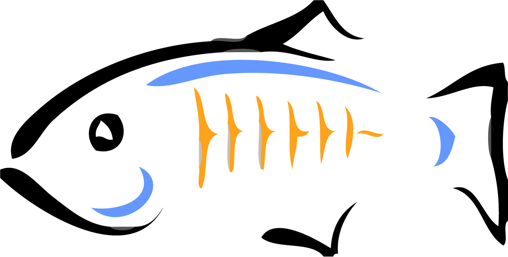

GlassFish(){
Software Livre
Por: Andrêssa Finzi

O que é o GlassFish?
A Sun MicroSystems atualmente subsidiária da Oracle Corporation especializada na fabricação de computadores, semicondutores e software, em junho de 2005 lançou o projeto GlassFish, uma ação que abriu para a comunidade Java o desenvolvimento de um servidor de aplicação também conhecido como software de middleware nada mais é do que um servidor que disponibiliza um ambiente para a instalação e execução de certas aplicações. O objetivo é disponibilizar uma plataforma que abstraia do desenvolvedor de software algumas complexidades do sistema operacional. Por exemplo no desenvolvimento de aplicações comerciais, o objetivo dos desenvolvedores deve ser a resolução de problemas relacionados as necessidades da empresa, e não de questões de infraestrutura da aplicação.
Uma das mais importantes características do GlassFish em seu lançamento foi a compatibilidade com a plataforma Java e o Java EE (plataforma de programação para servidores na linguagem de programação Java). Desde então uma grande e crescente comunidade de desenvolvedores tem participado ativamente do projeto.
As várias faces do GlassFish
O glassfish pode ser visto de diversas maneiras: como uma comunidade, como um projeto ou como um servidor de aplicações.
Como uma comunidade: A comunidade GlassFish inclui atualmente mais de 1.100 membros que participam do projeto, com o objetivo de desenvolver um servidor de aplicação de código aberto que implementa Java EE 5. Além disso, a comunidade está trabalhando para desenvolver tecnologias de serviços web além do desenvolvimento do servidor de aplicação. A comunidade inclui colaboradores independentes assim como contribuidores de várias organizações e companhias. Membros da comunidade GlassFish não tem necessariamente que ter um papel ativo no desenvolvimento de código para o servidor de aplicação. Simplesmente usando o servidor de aplicação eles podem registrar e rastrear bugs e trocar informações com outros membros da comunidade.
Projeto: O projeto GlassFish é um ambiente estruturado para desenvolvimento de código aberto para servidor de aplicação. A criação do projeto GlassFish é resultado do grande esforço da Sun em liberar grandes porções deste código em código livre para o uso e desenvolvimento pela comunidade.
Servidor: isto é o que a comunidade GlassFish está construindo dentro do projeto GlassFish. O servidor de aplicação de código aberto é baseado em código fonte da Sun Java Sysem Application Server Platform Edition 9, doada pela Sun Microsystems e no código fonte da TopLink que é um framework para a linguagem de programação Java desenvolvido pela Oracle .
Qual a importância do GlassFish?
GlassFish disponibiliza um código aberto, de implementação de nível comercial do Java EE 5 nas mãos da comunidade. Os benefícios que isto pode trazer para desenvolvedores é que caso os mesmos desenvolvam aplicações corporativas em Java, sendo um membro da comunidade GlassFish isto lhe dará a oportunidade de desenvolver estas aplicações e testá-las de acordo com as especificações Java EE 5. A plataforma Java EE é considerada um padrão de desenvolvimento já que o fornecedor de software nesta plataforma deve seguir determinadas regras se quiser declarar os seus produtos como compatíveis com Java EE. Devido a essas características a plataforma é utilizada principalmente para o desenvolvimento de aplicações corporativas como dito anteriormente.
É possível ter uma visão antecipada de alguns dos novos recursos do Java EE 5, tal como o novo Java Persistence API (padrão do java para persistência ), as capacidades de mapeamento avançados no Java Architecture for XML Binding (JAXB) 2.0, a interface simplificada para desenvolvimento de serviços web no Java API para XML Web Services (JAX-WS) 2.0, bem como as melhorias para facilitar o desenvolvimento usando Enterprise JavaBeans 3,0 consultando a página Jav a EE 5 Technologies .
Como contribuir sendo um membro?
Uma forma significativa em que os membros da comunidade podem contribuir é através da troca de informações. Seja postando no fórum de discussão GlassFish , difundindo as listas de discussão , ou acessando o blog . Os membros da comunidade mantêm um contínuo diálogo sobre muitos aspectos do projeto, tais como conhecimentos pessoais sobre os recursos do Glassfish, questões de desenvolvimento projeto e respostas às questões técnicas. Além disso outro recurso que fornece um fluxo livre de informações entre os membros da comunidade GlassFish é um blog coletivo, The Aquarium, que coleta notícias relacionadas à comunidade GlassFish a partir de uma variedade de fontes.
GlassFish também dá aos membros da comunidade a oportunidade de melhorar o código de servidor de aplicação. É uma necessidade dos desenvolvedores ter a oportunidade de contribuir com correções e novas funcionalidades para o código da Sun e o projeto GlassFish dá aos membros da comunidade o contexto para fazer isso. Como membro, você pode identificar erros no código, contribuir com correções, e até mesmo adicionar novas funcionalidades. Contribuições em código feitas pela comunidade não só melhoram o servidor de aplicação GlassFish. Como a Implementação de Referência (RI) do Java EE 5, do Java EE 5 SDK, e Sun Java Application Server Platform Edition 9 são derivados do código GlassFish contribuições em código feitas pela comunidade não só melhoram o servidor de aplicação GlassFish, mas todos os seus derivados. Assim, através dessas contribuições de código, membros da comunidade GlassFish têm um impacto real sobre o RI e sobre a implementação da plataforma da Sun.
Como se envolver
O lugar para começar com o GlassFish é a página da comunidade GlassFish . O próximo passo é baixar e usar GlassFish. O código de GlassFish é distribuído sob a Licença da Common Development and Distribution Licence (CDDL) e do GNU General Public License que nasceram da necessidade de uma licença que fornecesse as proteções e liberdades necessárias para o código aberto. Isto permite que a comunidade visualize, utilize, edite e altere o código, assim como distribua e utilize o código produzido.
A comunidade GlassFish disponibiliza para download a versão nightly builds e weekly builds. A primeira trata-se de uma versão que contêm os recursos e modificações mais recentes mas normalmente é mais instável poisnão passou por muitos testes já o segundo pode não ter os recursos mais recentes mas é mais confiável pois foi mais testado antes de ser disponibilizado. Para fazer dowload do GlassFish consulte a página downloads GlassFish .
Ao utilizar GlassFish, você tem acesso a vários recursos de informação, tais como especificações, projetos, dicas técnicas, manuais de utilizador e FAQs. Você encontrará mais informações sobre esses recursos no GlassFish: Use a página de Tecnologia . Se você quiser desenvolver código para GlassFish, você terá que seguir certas regras no processo de desenvolvimento para o projeto GlassFish. Estes incluem regas como Coding Conventions (permite uniformizar o código, possibilitando que vários departamentos programem da mesma maneira) e Commit Procedures. Você também precisa assinar um acordo de contribuição. Embora isto possa parecer um pouco burocrático, o fato é que o projeto GlassFish é regido por relativamente poucas regras e é principalmente dirigida por consenso. Esta abordagem de consenso significa, por exemplo, que as questões relacionadas com o projecto são divulgados para a comunidade e que as decisões relacionadas a estas questões são alcançados através de um acordo geral dentro da comunidade.
Referências:
Site Oficial
Wikipedia - GlassFish
What is GlassFish?
}